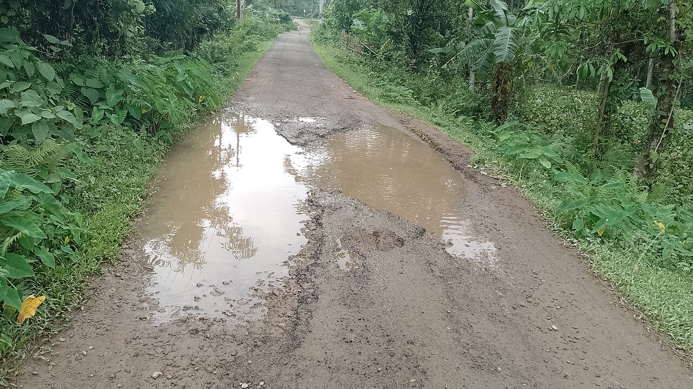

Inspection Analysis
Ready to inspect
Run pothole detection on this road photo, or drag and drop / paste (Ctrl+V) a new image.
Detections
0
Damaged Area
0.0%
Condition
—
Speed
—
0 of 0 reviewed
Saved Inspections
Reopen or remove previous road inspections stored locally in this browser.